LinSol
Tasarımdan imalata. Tek programda.
Modelleme, montaj, teknik resim, render, analiz ve CAM. Türkçe arayüz, internet gerektirmez.
Sürüm 0.9.182 · Windows 10 / 11 · 183 gün ücretsiz deneme
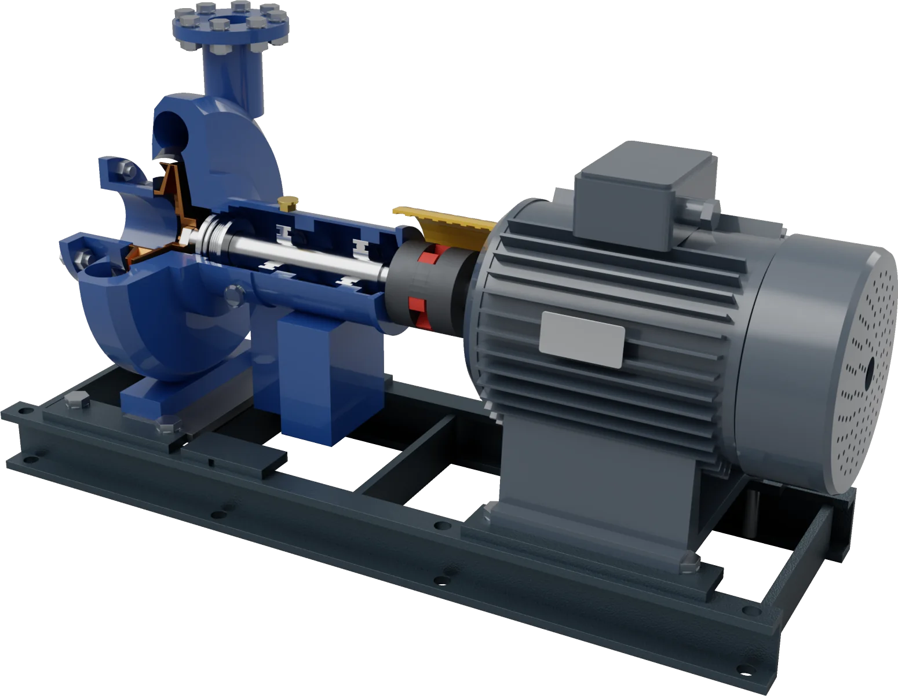
Modelleme ve montaj
Ölçüyü değiştirin.
Model kendini güncellesin.
Parametrik katı modelleme, sac metal, yapısal profiller ve montaj aynı özellik ağacında.
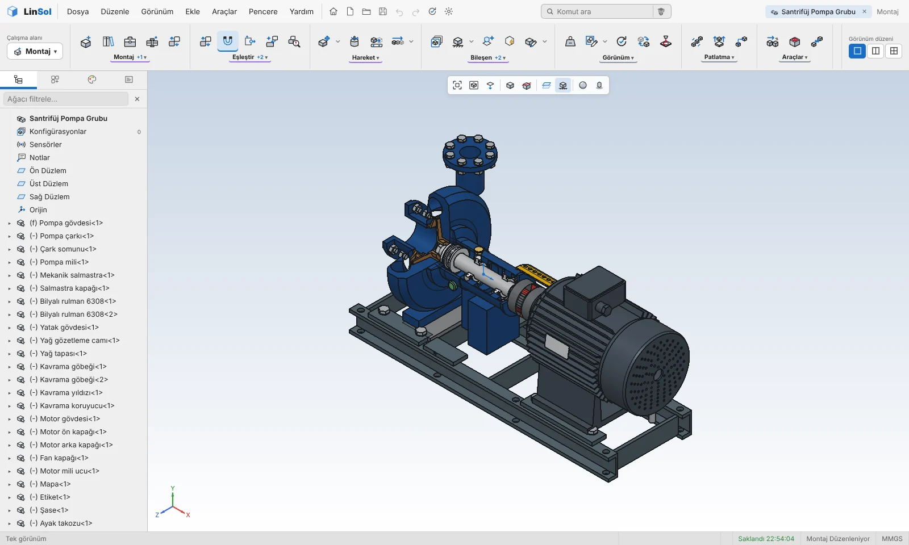
birkaç saniyede açılıyor.
10 000 parçada, RTX 4060 Ti ile.
taslaktan sac metale, yüzeyden mesh'e.
Sac metal ve profil
- Flanş, büküm, kıvırma, açınım
- Yapısal profil, gruplar ve köşe birleşimleri
- Lazer kesime hazır kertmeli profil açınımı
Montaj
- Eşleştirme ve otomatik eşleştirme önerileri
- Hareket etüdü, çarpışma ve girişim algılama
- Konfigürasyonlar ve patlatılmış görünüş
Teknik resim
Tek tıkla
tam bir pafta.
Görünüşler, parça balonları ve malzeme listesi modelden kendiliğinden yerleşir.
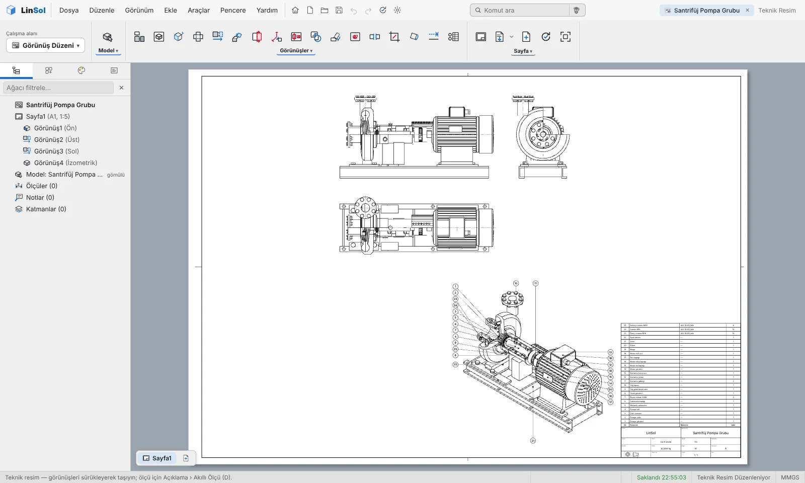
Görünüşler
Kesit, ayrıntı, kısmi kesit ve renkli görünüşler.
Ölçülendirme
Otomatik ve elle ölçü, toleranslar, yüzey işaretleri.
Çıktı
Gerçek ölçü nesneleriyle DXF ve DWG, ayrıca PDF.
Render
Işığı gerçek gibi.
Işık izlemeli render motoru ekran kartında çalışır, yapay zekâ gürültü gidericisi görüntüyü saniyeler içinde temizler. Bu görüntülerin hepsi LinSol'de modellendi ve render edildi.
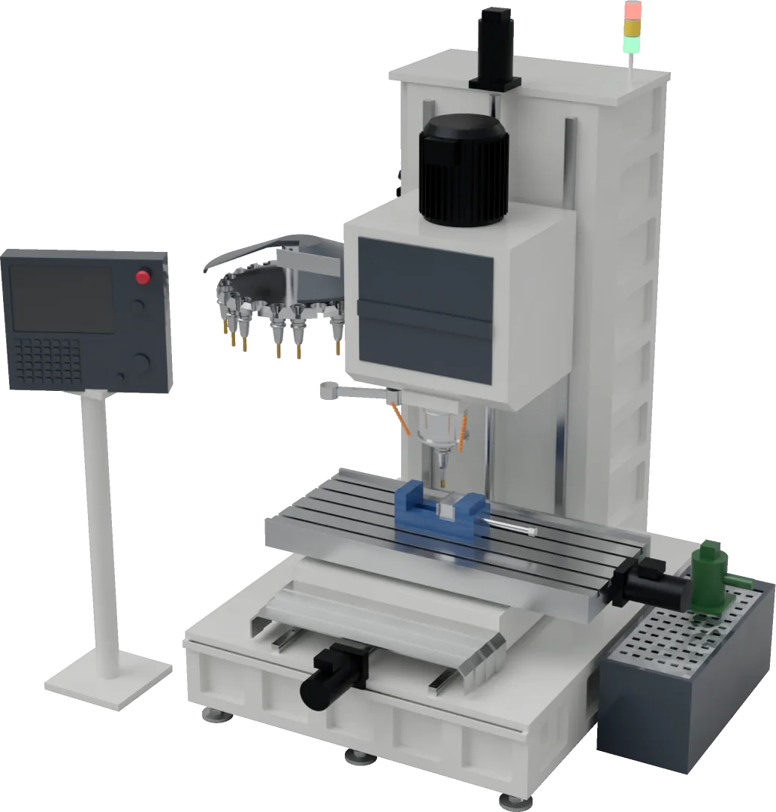
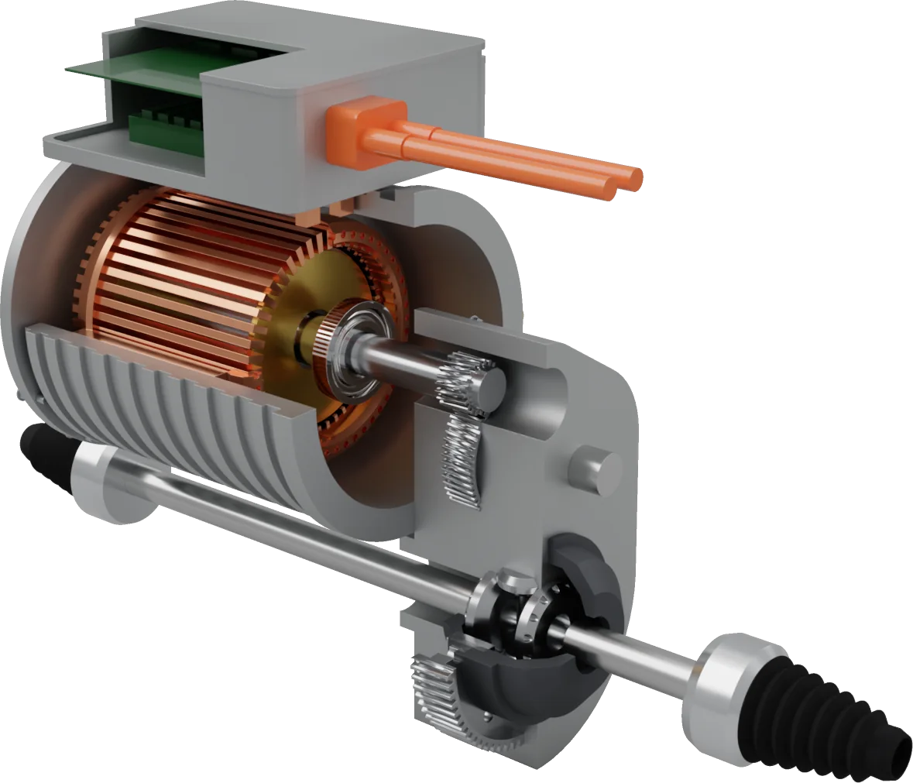
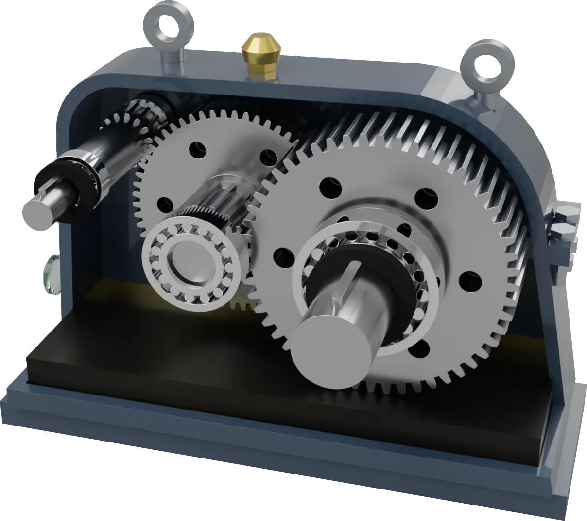
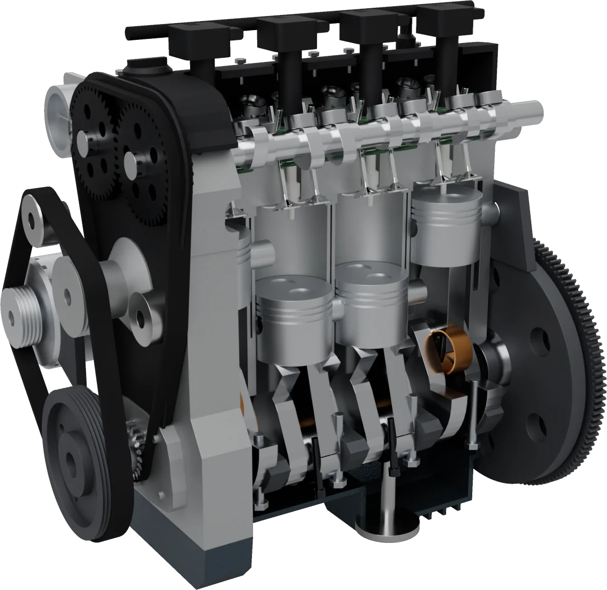
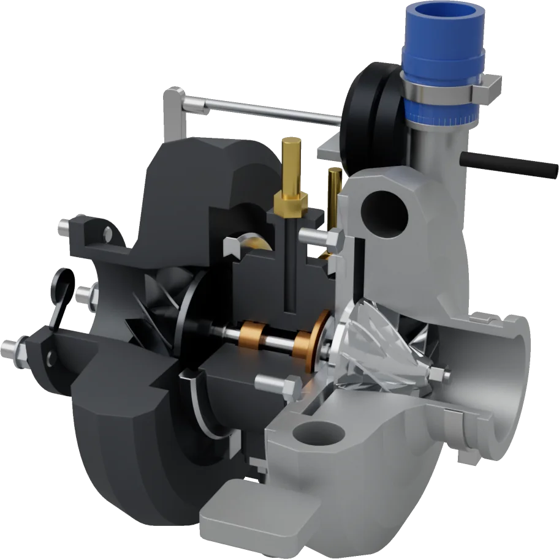
metal, ahşap, taş, kumaş, boya ve plastik.
stüdyo ve dış mekân ışığı.
yapay zekâ ile, ekran kartında.
Analiz
Hesabı başka yerde
yapmanıza gerek yok.
Parçayı ya da montajı aktarmadan analiz edin. Sonuç modelin üzerinde renk haritası olarak görünür.
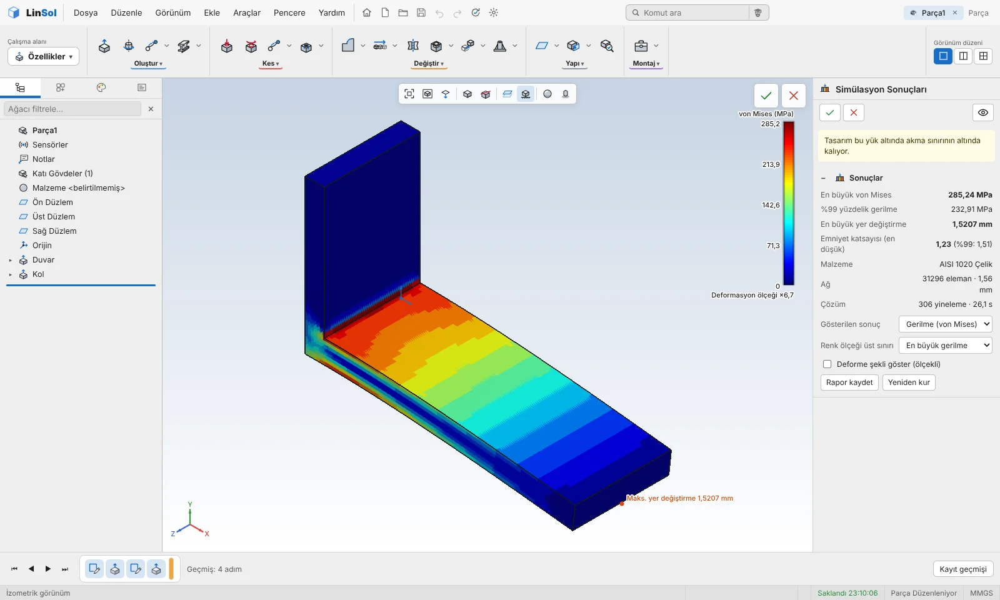
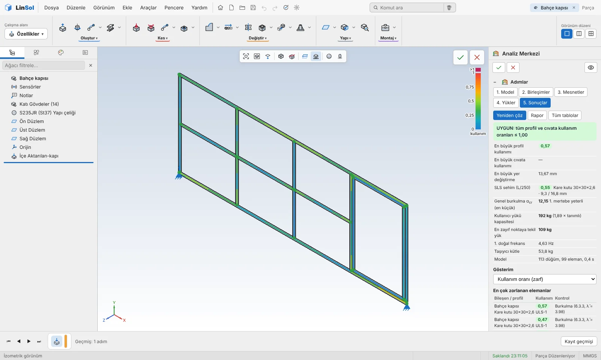
Sonlu elemanlar
- Statik gerilme ve yer değiştirme
- Doğal frekans ve burkulma
- Isıl analiz ve ısıl gerilme
- Montajda temas ve ön yüklü cıvatalar
- Plastik akma ve büyük yer değiştirme
Çelik ve ahşap çerçeveler
- Eurocode 3 ve 5 kontrolleri
- TBDY 2018 spektrumuyla deprem hesabı
- İkinci mertebe etkileri ve kararlılık
- Yanal burulmalı burkulma, kaynak, sehim
Üretmeden önce bilin
Üretilebilirlik denetimi, maliyet tahmini, tolerans yığılımı, karbon ayak izi tahmini ve senaryoları yan yana koyan tasarım etüdü.
İmalat
Modelden doğrudan
tezgâha.
Takım yolunu çıkarın, benzetimini izleyin, G-kodunu alın.
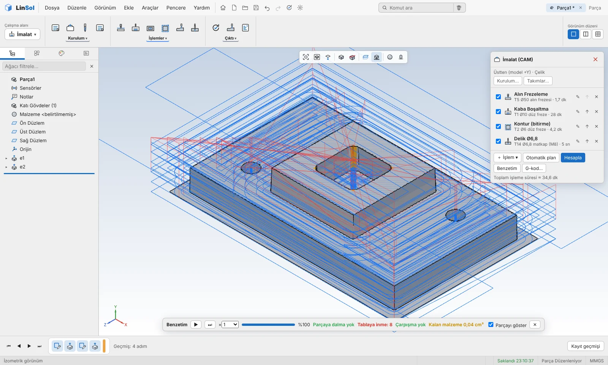
Freze
Alın, kaba boşaltma, trokoidal, kontur, delik ve 3B bitirme.
Torna
Dış ve iç profil, kanal, delik, kesme. C ekseni canlı takım.
Benzetim
Tezgâh, bağlama ve takım tutucu için çarpışma denetimi.
3B yazdırma
Modeli yatırır, tablaya dizer, bilgisayarınızdaki dilimleyicide açar.
Sac yerleşimi
Parçaları levhaya gerçek biçimleriyle yerleştirir, fireyi azaltır.
Profesör
Sorun.
Ekranda göstersin.
İnternet olmadan çalışan yardımcı. Adımları anlatır, komutu ekranda gösterir, basit parçaları sizin ölçülerinizle çizer.
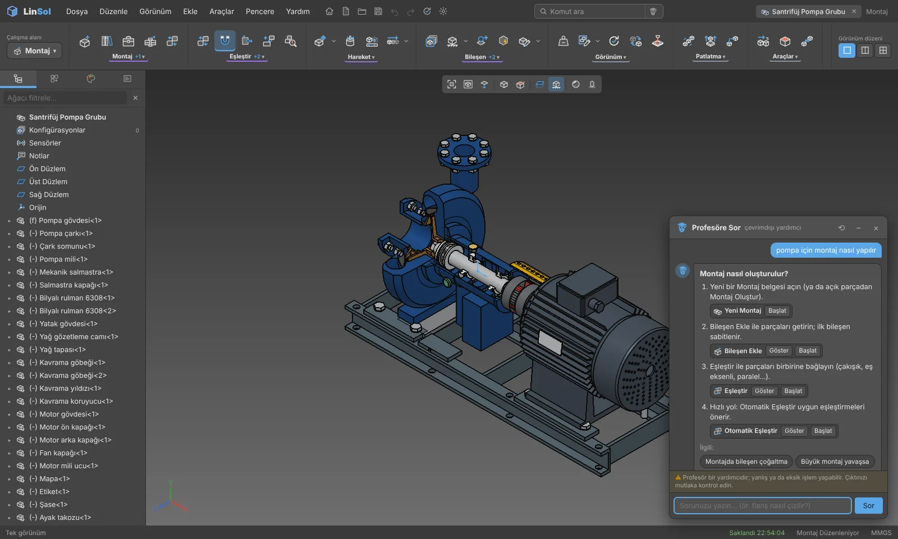
Farklar
Neden LinSol?
Her şey tek kurulumda
Modelleme, teknik resim, render, analiz ve CAM ayrı ürünler ya da ayrıca alınan eklentiler değil. Hepsi aynı pencerede, aynı dosyada.
İnternet gerekmez
Hesap açmanız ya da her açılışta oturum açmanız gerekmez. Dosyalarınız bilgisayarınızda kalır.
Türkçe, buraya göre
Arayüz, yardım ve malzeme adları Türkçe. TBDY 2018 deprem hesabı ve RAL kartelası yerleşik. İngilizce arayüz de var.
Açık dosya biçimleri
STEP parça adları ve renkleriyle, DXF gerçek ölçü nesneleriyle yazılır. Verileriniz başka programlarda da açılır.
Hafif ve hızlı
Yaklaşık 400 MB kurulum. Gerçek zamanlı görünüm ve render sıradan bir oyun ekran kartında akıcı.
Hep güncel
Yeni sürüm çıktığında program sizi uyarır, güncelleme imzalı paketle gelir.
Antet
Teknik özellikler
183 gün ücretsiz.
Bütün özellikler açık. İndirin, kurun, çizmeye başlayın.
Sürüm 0.9.182 · 416 MB · Windows 10 / 11, 64 bit
Kurulum dosyası henüz kod imzalı değil. Windows uyarı gösterirse Ek bilgi'ye, sonra Yine de çalıştır'a tıklayın.
SHA-256: 27b40e5366fd7890e116aeff83ceb7b5806ead5555cf8dc5a678f94fb22ad5fd